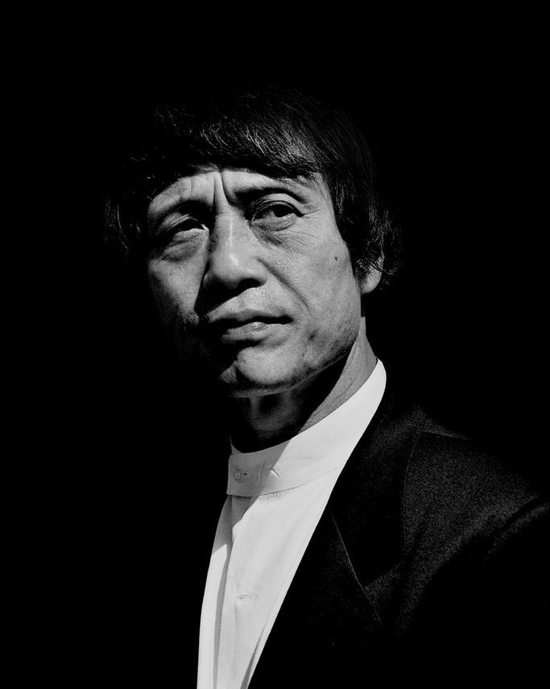

Tadao AndoEl viaje contemporáneo · Europa, África y Asia, 1965
Itinerario · 22 estancias
Eje cronológico del viaje
Documentación histórica y reconstrucción
Tadao Ando (Osaka, 1941) es un arquitecto autodidacta: la situación económica de su familia le impidió cursar estudios universitarios, y se formó a través de la lectura, el trabajo y, sobre todo, los viajes. Antes de partir hacia Europa, recorría Japón siempre que podía para ver todo tipo de arquitectura:
«Siempre que tenía tiempo, viajaba por Japón observando todo tipo de arquitectura, desde edificios antiguos en la región de Kansai hasta la arquitectura moderna más reciente. Naturalmente, eso me llevó a pensar en el resto del mundo, y en 1965, un año después de que se permitieran los viajes internacionales en general, gasté el dinero que había ahorrado con trabajos de medio tiempo y me fui solo a Europa» (trad. propia)1
Las fuentes disponibles para la reconstrucción de este viaje son: testimonios retrospectivos recogidos en entrevistas y en su autobiografía, junto con un número reducido de fotografías publicadas. El material gráfico del viaje incluido en el catálogo de la exposición Tadao Ando: Endeavors (2017) no ha podido consultarse.
En 1965, con 23 años, Ando emprende su primer viaje al extranjero, financiado con el dinero ahorrado en trabajos temporales y posible gracias a la liberalización de los viajes turísticos al extranjero aprobada por el gobierno japonés en abril de 1964. Su motivación principal, según ha relatado en diversas entrevistas, fue un libro de dibujos de Le Corbusier comprado de segunda mano en la librería Tengyu Shoten de Osaka. La obra del maestro suizo lo cautivó hasta el punto de emprender el viaje con la idea de conocerlo en persona en su estudio de París, sueño que no llegó a cumplir: Le Corbusier murió en Roquebrune-Cap-Martin el 27 de agosto de 1965, pocas semanas antes de que Ando llegara a París.
no se reproduce en la versión web.Ver en la fuente ↗
no se reproduce en la versión web.Ver en la fuente ↗
«A partir de entonces, repasaba los dibujos cada noche. Poco a poco, mi deseo de “experimentar los espacios de Le Corbusier de primera mano” y “conocerlo en persona” se hizo más fuerte; creo que el detonante directo de mi primer viaje alrededor del mundo fue este deseo de “conocer a Le Corbusier”» (trad. propia).2
No existe documentación exacta que permita fijar la cronología del viaje, que duró unos siete meses e incluyó, además de Europa, el regreso por África y Asia.
El propio Ando describe la primera parte del itinerario en Conversaciones con estudiantes:
«Así que en 1965 decidí, con gran entusiasmo, ir a Europa para conocerlo [a Le Corbusier]. A finales de abril embarqué en Yokohama rumbo a Najodka, en la entonces Unión Soviética. A mi llegada tomé el Transiberiano y viajé hasta Moscú, pasé por Leningrado (hoy San Petersburgo) y, a través de Finlandia, llegué finalmente a París en septiembre» (trad. propia)3
Al comienzo del mismo libro describe brevemente el inicio de su regreso a Japón, bordeando África y cruzando la India. Algunas fuentes japonesas sitúan el resto del regreso en barco a través de Filipinas, aunque no se ha encontrado una fuente directa en la que Ando confirme esta última escala4.
«Hace más de treinta años emprendí el regreso a casa de mi primer viaje a Europa. Tras esperar varias semanas en Marsella, embarqué rumbo a Japón, con escalas en Costa de Marfil, Ciudad del Cabo y Madagascar, antes de cruzar finalmente el océano Índico y llegar a Bombay. Allí, como atraído por una fuerza misteriosa, tomé un tren hacia la tierra sagrada de Benarés, en el norte de la India» (trad. propia)5.
Durante su estancia en Europa, antes de embarcar en Marsella rumbo a África, Ando recorre principalmente la arquitectura de su ídolo, Le Corbusier —la Villa Savoye, el convento de La Tourette, la Unité d’habitation de Marsella—, además de clásicos de la historia de la arquitectura como el Partenón, el Panteón de Roma o la Sagrada Familia de Barcelona.
Nota: los metadatos de esta fotografía sitúan su toma en 1964, lo que contradice toda la bibliografía y las entrevistas del propio Ando; probablemente se trate de un error del archivo.
Tras este recorrido por Europa a partir de septiembre de 1965, se estima que Ando embarca en Marsella rumbo a África entre octubre y noviembre, bordea el continente y llega a la India por Bombay.
El viaje de Ando es el más difícil de reconstruir espacial y temporalmente de entre los casos de estudio: los documentos de archivo accesibles publicados por su estudio se reducen a dos fotografías, una en una parada del Transiberiano y otra en el Partenón de Atenas. Del registro del viaje se conocen, por tanto, sobre todo esas fotografías y los testimonios posteriores del arquitecto. Existe bibliografía que podría completar esta información —en particular, el catálogo de la exposición Tadao Ando: Endeavors (Centro Nacional de Arte de Tokio, 2017), que reproduce los apuntes de su cuaderno de viaje6—, pero no ha sido posible consultarla en esta investigación.
Influencia en la arquitectura posterior
La influencia del viaje en la arquitectura posterior de Ando no puede comprenderse sin la idea que lo impulsó en 1965: el deseo de conocer a Le Corbusier.
Aunque esta etapa de su vida está poco documentada en las publicaciones accesibles desde el ámbito occidental, el propio Ando ha dejado escrito y ha contado en numerosas entrevistas cómo los lugares que visitó en 1965 —la mayoría, obras de Le Corbusier— influyeron en sus obras posteriores.
no se reproduce en la versión web.Ver en la fuente ↗
no se reproduce en la versión web.Ver en la fuente ↗
no se reproduce en la versión web.Ver en la fuente ↗
no se reproduce en la versión web.Ver en la fuente ↗
En un artículo del Mori Art Museum que resume las ideas que Ando compartió en una conferencia en la institución, el arquitecto habla de la fuerte influencia que tuvo ver la obra de Le Corbusier en Europa.
En la vida que presenció en la Unité d’habitation de Marsella, durante las semanas que pasó allí esperando el barco de regreso, sitúa el origen de la idea de «espacio de margen», que ha ido construyendo a lo largo de su práctica: la importancia de los espacios de encuentro entre las personas que la arquitectura tiene el poder de generar. Esta idea es una constante en su carrera, como puede verse en obras como el conjunto residencial Rokko, donde se cuidan especialmente los espacios intermedios y de tránsito para facilitar esos «encuentros».
Al hablar de la casa Azuma, Ando señala que toma como referencia directa la Villa Savoye, al estructurar el espacio habitable en torno a un patio interior que articula los recorridos de la casa y difumina los límites entre interior y exterior7.
En la misma conferencia habló de otra de sus obsesiones arquitectónicas: esculpir la luz y crear espacios en los que la luz sea protagonista. En este campo, reconoce haber tomado como referencia la capilla de Ronchamp de Le Corbusier para la Iglesia de la Luz de Ibaraki (Osaka) y para el Museo de Arte Chichu de Naoshima.
Por último, reconoce la relación entre su casa 4×4 de Kobe y el Cabanon de Le Corbusier, el refugio en el que el maestro pasó los veranos de sus últimos años: ambas son casas de escala muy reducida, vinculadas a su posición frente al mar, en las que se busca la expresión a través del espacio y no del tamaño:
«La arquitectura no es una cuestión de tamaño físico, sino de espacio»8
El caso de Ando muestra que, en el viaje contemporáneo, las influencias no son necesariamente explícitas en cuanto a composición y forma. Predomina una influencia basada en la percepción —una cuestión más fenomenológica—, en la que la inspiración procede más de la experiencia vivida del espacio, de la luz y del uso que de la cita formal. Ello respalda la matización del viaje contemporáneo propuesta en este trabajo: un viaje que combina la peregrinación a las obras maestras de la arquitectura moderna con una experiencia del espacio de carácter fenomenológico.
no se reproduce en la versión web.Ver en la fuente ↗
no se reproduce en la versión web.Ver en la fuente ↗
no se reproduce en la versión web.Ver en la fuente ↗
no se reproduce en la versión web.Ver en la fuente ↗